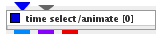

|
|
|

Selects a time moment from dtime dependent data, animates time dependent data over time.
| input port | type | description | data acceptors |
|---|---|---|---|
| inField | VNField | Input for data field with time frames | Field with time frames |
| frame | Integer | ||
| output port | type | description | data schemas |
| outRegularField | VNRegularField | Regular Field |
|
| outIrregularField | VNIrregularField | Irregular Field |
|
| outObj | VNGeometryObject |
TIME SELECT/ANIMATE
The module selects a time moment from time dependent data and animates time dependent data over time.
Input data
The input field is a data field with time frames.
Output data
At output there is a field, a regular field and a geometric object of the field.
Computation tab

Using the time range slider or the text fields below the slider the user defines the time interval of the animation. By default the whole interval of time steps is used.
The frames text field contains the number of time frames. By default the number equals the number of time steps. If frame number is different from the number of time steps the values of the data are interpolated.
A set of buttons allows to navigate from frame to frame:
The current frame slider and the frame and time text fields show the current frame and time step. The user can choose a frame number dragging the slider or entering a value into the frame text field, and a time step entering a new value into the time text field.
The play speed slider defines the animation speed.
There are three run options for running the animation:
Press the detach button to detach/attach the navigation panel for the animation.
By default during animation only the geometry object is updated. In order to update output fields the continuous output update check box can be switched on.